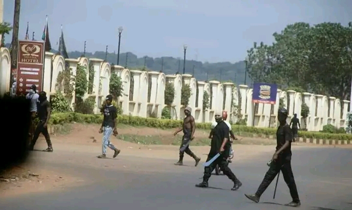
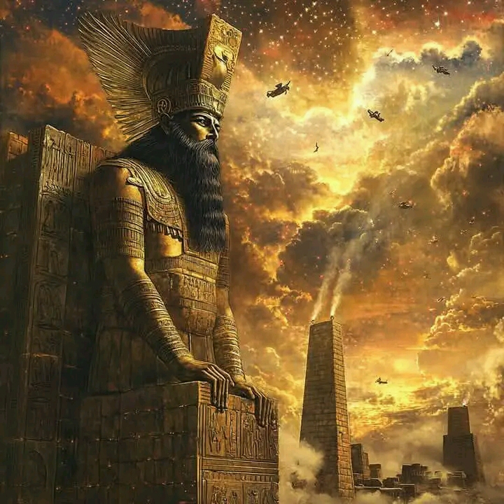
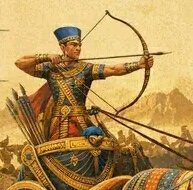
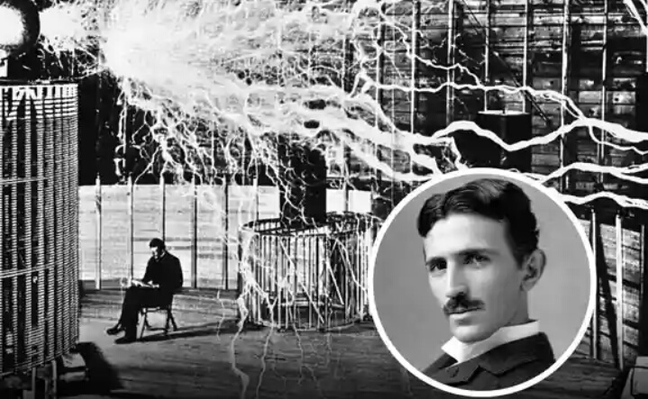

ACROSS THE BRIDGE
There Life will be perfect
It will be immortalized
There will be no weeping
There will only be rejoicing
Never will thy labour be in vain
Gold in abundance will be thy gain
No nation will forge weapons
Of mass destruction against
Another nation, truly
All gonna be but one nation
Existing in love and harmony.
Across the bridge there
There will be no differences
Neither one rich nor another poor
All will be but equal
Having necessities in abundance
The beast of the field
Never will it gonna be a menace
But a friendly companion
Existing side by side
In love and harmony.
The supernatural powers
That begot the multiverse
Shall be among us
And we shall be among them
Never shall one wonder why or how
For knowledge will be among us
Dear brother, dear sister
Don't you worry about a thing
Rather hold onto thy faith surely
A crown of immortality will be the reward
And everything gonna be alright
Indeed life gonna be alright
Across the bridge.
(SALMANDA)
~~~~~~~~~~~~~~~~~~~~~~~~~~~~~~~~~~~~~
WE SUMMONED THE DEMON
We summoned a Demon from Hell
Out of desperation and anticipation
That perhaps things could be better,
Better than the latter
How wrong we were, the pain has been long and persistent
Though it was insisted things will be better, better than the latter.
It turned out to be worse
Once summoned chaos reigned
Masquerading under carefully curated rhetoric
Mass hunger was crafted to profit off it
Public scoffers were rooted for the benefit of an inner circle;
Brothers, Sisters, Sons, daughters, Friends, Colleagues, Girlfriends, Boyfriends, Sons in-law, Daughters in-law you name them
While a villager, a poor Villager was dying of hunger, shortage of medication, even depression
Debt incremented, incremented with 19 trillion within a mere 5 years
Though it was only 4 trillion for a period of more than 20 years
Such a burden pilled upon our heads, our children's, our grand children's, our grand-grand children's, the line continues to infinity
Carelessness of such unprecedented level, greedy is the sin and the wages of sin is death
Indeed unaware, unknowing we summoned a Demon from Hell
Peace and Freedom which was hard earned decades ago was scraped
Masked men would roam the street terrorising citizens, citizens trying to voice their voices
Police men and Soldiers just looked on
Things my generation thought incapable of happening, yet it happened
Lucky enough though, for there was a way, a way to send the Demon back, back to Hell striped off of it's power.

(SALMANDA)~~~~~~~~~~~~~~~~~~~~~~~~~~~~~~~~~~~~~
THE FATE OF A DICTATOR
He rules with an iron Fist
Total submission is cultivated out of terror
Don't dare make an error
Execution is the reward
Otherwise escape into exile
Many miles away into a foreign territory
Yet never stop watching your back
Agents might be back,
Blood, tears, wrath are upon his Head and Hands
Even so does his Heart harden even further like Pharaoh
The miseries of the peasants He tramples underfoot, or doubles, or triples them, in the process
Becoming an architect of his own downfall
Multiplying the magnitude of his own punishment
Pharaoh was swallowed by the ocean
Along the best of his men
His kingdom was given to others
King Herod was struck by an Angel of the Lord himself
He had exalted himself far beyond necessary
King Nebuchadnezzar of Babylon was rendered insane until he humbled himself
The list is endless, it continues into the morden era
The Fate of a Dictator is far worse than than you can imagine
The vengeance is divine,
The Fate of a Dictator
Is that he always falls
The higher he exalts himself,
The more ruthless he becomes
The greater the falling is
No matter how long it takes
The end always comes
Indeed the end will always come
Sometimes unexpectedly and suddenly.

(SALMANDA)~~~~~~~~~~~~~~~~~~~~~~~~~~~~~~~~~~~~~
ALL THE DEVILS ARE HERE
Hell is empty and all the Devils are here
Two Legs, Two Arms and a face just like your own, sometimes smiling
Clean, smart and wealthiest Unclean, Dirty and not wealthiest None the less they are here
Walking, talking, eating among us
Diabolical schemes concealed within confinements of the Heart
The Heart the source of all wickedness
A child, an adult goes missing
An albino's grave exhumed
A mutilated body gets discovered
The atrocities are frightening and completely traumatizing
Robbed, Raped, Gunned down
Scammed of hard earned earning
Used and then dumped
Corruption leads the way
Clean Minds are corrupted
And the atrocities are endless
Fear, Fear for your Life
You're a source of income, yes a source of wealthy to a greedy mind
Be cautious, cautious for the Devil my be lurking just around the corner waiting to pounce
Wars and rumours of Wars
Suffering at unprecedented scale
Hunger, trauma, mass murder
The reign of chaos
One Human against another Human
Indeed Hell is empty and all the Devils are here
(SALMANDA)
~~~~~~~~~~~~~~~~~~~~~~~~~~~~~~~~~~~~~
LOVER
O! Lover where thou art
Day and Night and l always Think about thee,
Wishing to gaze upon thy Beautiful Face, thy beautiful Body
Wishing to hold thee in mine arms,
O! Lover how priceless it is To have thee by my side,
A moment of pure joy
Never attained before,
One l wanna remain forever,
Staying still and I reason O! my God
Before the moon and the stars,
Here is my Friend, my partner
And my Lover, yes my Lover,
Indeed thou cares for all
May thy righteous hand rain
Blessings, yes blessings forever more,
O! Lover wherever thou art
I wish thee nothing,
But all the best, indeed I wish thee nothing,
But success and prosperity
May thy dreams come to pass,
Thy future, may it be bright
As bright as the morning Star
Shining, shining forever more.
(SALMANDA)
~~~~~~~~~~~~~~~~~~~~~~~~~~~~~~~~~~~~~
POLITICAL ASSASSINATION
Politics is a Game
And a dangerous game at that matter
Everyone wants to win
Everyone don't want to loose
Therein everything is done
In order to attain victory
Deceive, Lie, manipulate, convince, motivate
Promise, buy, assassinate
Just about anything possible
In order to attain victory
In order to grab the power
By far assassination is the most potent
The elimination of competition
It ensures a sure victory
Unless the opponent is a weaker one
One that possess no threat
A stronger opponent is a threat
A threat to sure victory
And a threat is better eliminated
One way or the other
It's survivor of the ruthless
Demise of the realist
Passionately consumed by greedy
Politicians spill Blood
Macbeth politically assassinated his King
Julius Caesar was politically assassinated
The Lord Jesus Christ was politically assassinated
Today in our own time
Nothing has changed

(SALMANDA)~~~~~~~~~~~~~~~~~~~~~~~~~~~~~~~~~~~~~
MY FORMER ARMOUR
Who a'm l without you
I have been working all the summer
Moving from place to place
I have been doing this for a while
Searching a better place for my Life
Cause where I'm from there is no resting
Yes I was zero on Blessings
I was getting tried but you make me
To travel again
And I say, if you see the light
Remember that I was with you
When you are lost and lonely Lover
Don't forget about me so soon
You try to put me in a designer
You show me the key of success
Last but not least
Mighty man of war, be with you
(By Cecy, Black Sherif Verse)
~~~~~~~~~~~~~~~~~~~~~~~~~~~~~~~~~~~~~
HONOUR
Honour can't be
Bought with gold,
For an honest man
Can't be sold,
Since he needs it
Like the Sun,
The dishonest man
Would surely sell,
But everyone knows
Quite well,
As for honour
He has none.

(Adapted)~~~~~~~~~~~~~~~~~~~~~~~~~~~~~~~~~~~~~
YET ANOTHER SONG
Yet another song
I have to sing
In the early wake
Of a colonial dusk
I sang the song of fire
The church doors opened
To the clang
Of new anthems
And colourful banners
Like the Beads
The evangelical hymns
Of conversation
Rocked the world and me
I knelt before the new totems
I had helped to raise
Watered them
With tears of ecstasy
They grew
Taller than life
Grimacing and breathing fire
Today
I sing yet another song
A song of exile
 (Adapted)
(Adapted)~~~~~~~~~~~~~~~~~~~~~~~~~~~~~~~~~~~~~
 (SALMANDA)
(SALMANDA)